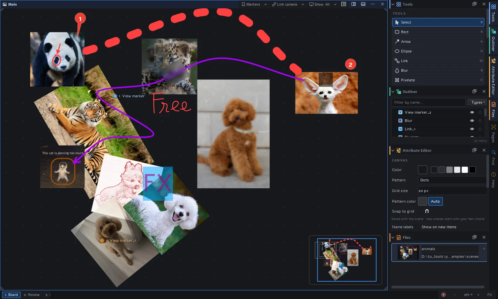
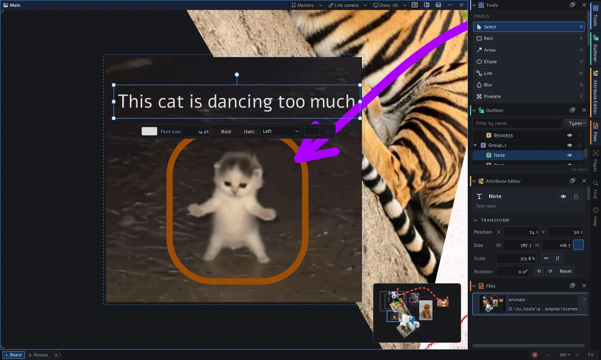
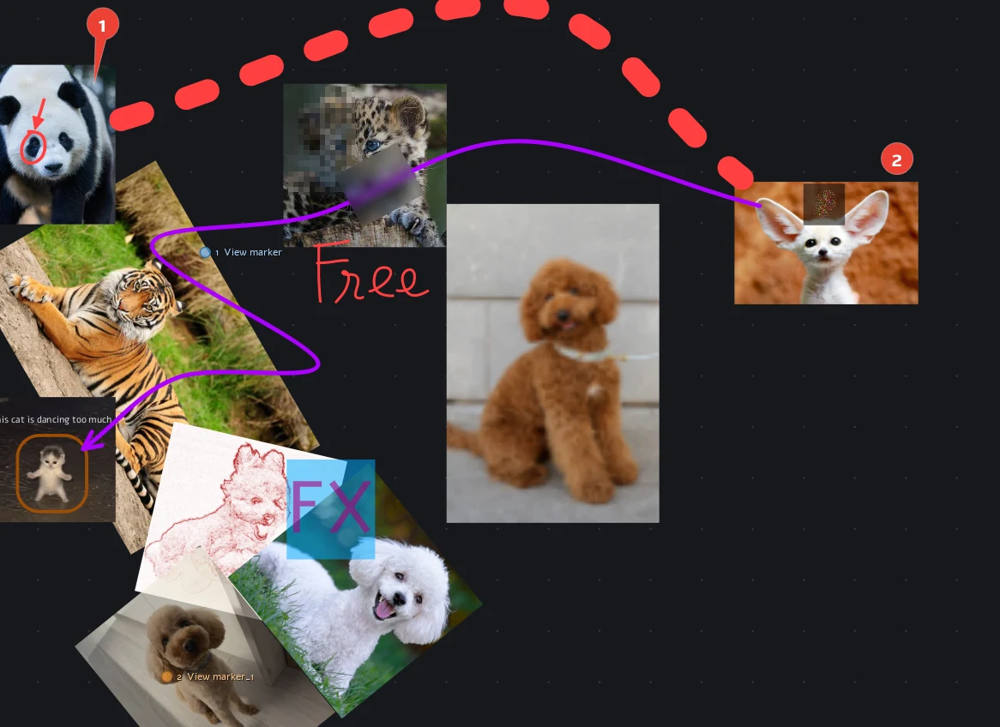
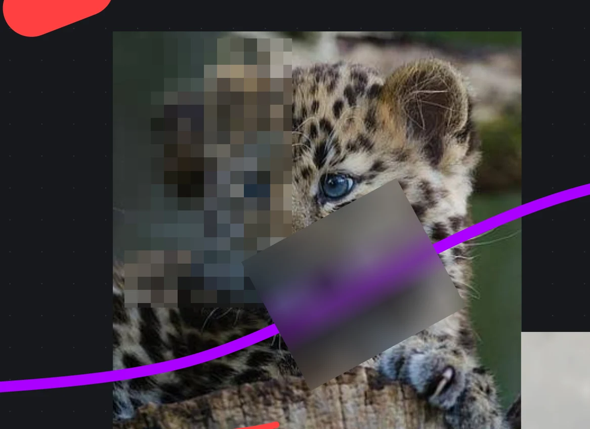
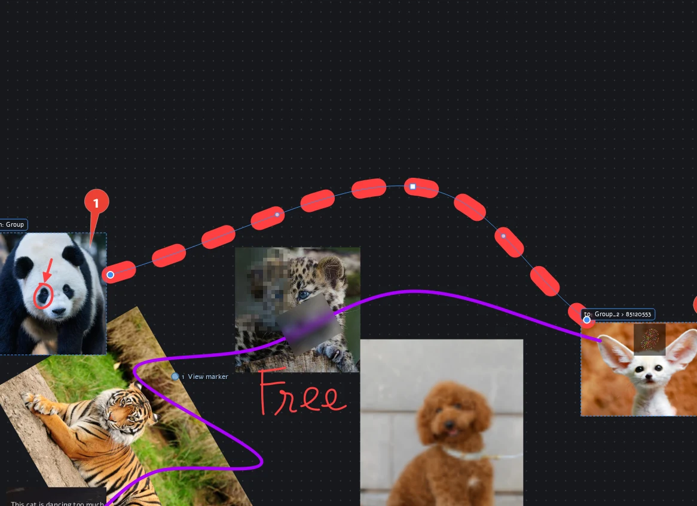
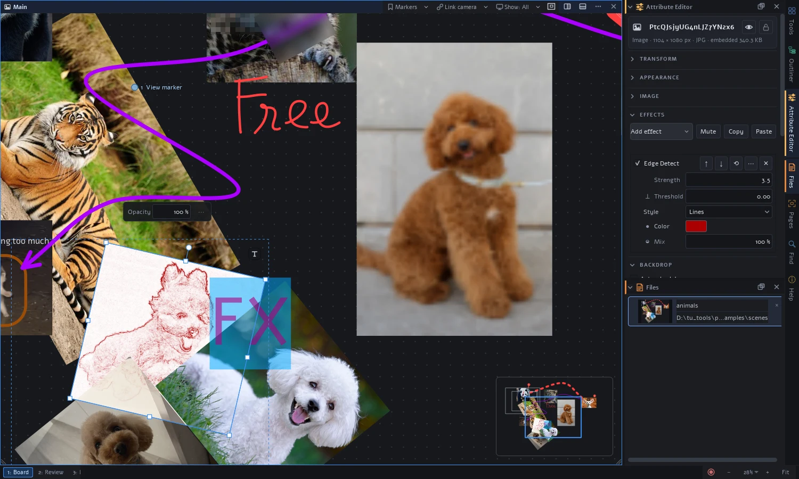
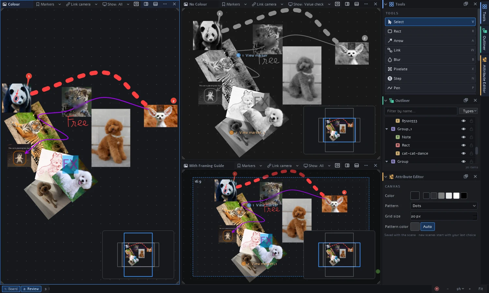
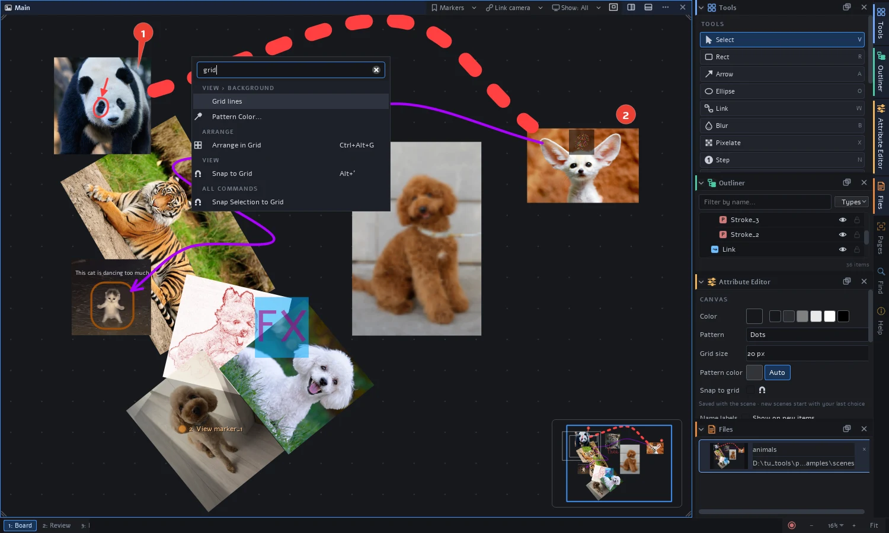
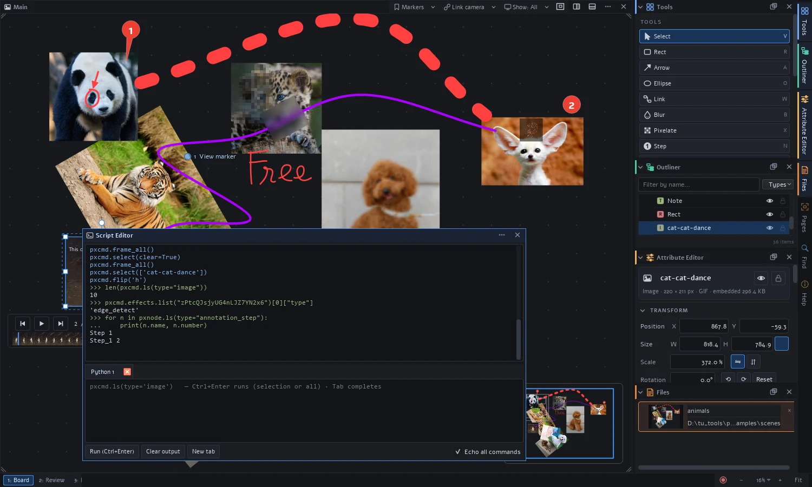

DCC Scene Graph & Views
Organize items in an Outliner hierarchy, tweak properties in the Attribute Editor, stack cached non-destructive effects, and split your board into i3-style tiled workspaces with independent cameras and value-check presets.
Drop in images, animated GIFs, and videos. Mark them up, connect them with smart links, stack non-destructive effects, and inspect everything across i3-style tiled views. Every UI action is a Python command, and every feature is a plugin.

examples/scenes/animals.pxref) showing images, animated GIFs,
step markers, dynamic links, live blur/pixelate regions, Outliner, Attribute Editor, and Minimap.
Click any screenshot to zoom.
Inspired by PureRef and BeeRef, pixelRef brings the architecture of Digital Content Creation (DCC) tools to reference gathering, visual review, and interactive boards.
Organize items in an Outliner hierarchy, tweak properties in the Attribute Editor, stack cached non-destructive effects, and split your board into i3-style tiled workspaces with independent cameras and value-check presets.
Turn on Echo all commands in the Script Editor (Ctrl+`) to see the exact
pxcmd call behind every click. Record macros, bind custom keys, or run
headless --batch scripts.
Every built-in tool, panel, and effect is a plugin in pixelref/builtins/.
Your own plugins use the exact same activate(ctx) and activate_ui(ui)
API to add node types, tools, views, and effects.
Explore how pixelRef handles media, markup, links, effects, and multi-view workflows.
Paste (Ctrl+V), press Ctrl+I, or drag in files, whole folders, animated GIFs/WebPs,
or images straight from your browser. Images embed into a single portable .pxref file by default,
or can be linked on disk.
.pur boards directly or drop them onto an existing canvas..mp4, .mov, .mkv, and .webm files on canvas.
Mark up references with text notes (T), rectangles (R), ellipses (O), arrows (A), freehand pen drawings (P), and auto-incrementing step markers (N). A note made while an image is selected attaches to it and moves with it.
2-5) in one step.
Draw a Blur (B) or Pixelate (X) region over names, faces, or UI details. These regions have no pixels of their own—they filter whatever sits underneath them in real time.

Use the Link tool (W) or Ctrl+L to connect elements. Links stay attached as items move and support straight, curved, or elbow paths with custom waypoints, labels, caps, and dashes.

Any element can carry a stack of effects—grayscale, invert, brightness/contrast, threshold, posterize, blur, and edge detect—plus custom effects added by plugins.
.pxref file.
Split your canvas into any number of tiled views (Ctrl+W then S or V), each with its own camera, display preset, and framing guides.

Right-click the canvas and start typing—or press Ctrl+K—to search every action across all plugins along with its keyboard shortcut.
#tag, type:, name:, note:, key:value, or -term.
Beyond static boards, pixelRef includes interactive click actions, selective attribute transfer, a scene-aware color picker, and an explicit plugin trust model.
Turn buttons or any item into clickable controls that show, hide, move, or jump to a GIF frame. Drag the handle beside a button onto a target, choose Make Tabs from Selection, or use Demonstrate… to pose the board's "after" state without writing code—then lock the button in the Outliner to make it live.
Press Ctrl+Alt+Shift+C and Ctrl+Alt+Shift+V to transfer styling across items with search, group checkboxes, Only differences filtering, and live canvas preview. Or select multiple items to edit Shared attributes simultaneously—even across different shape types.
Every color swatch opens a popover with a saturation/brightness square, hue ring, alpha,
RGB/HSV/HSL sliders, hex/rgb() input, a screen-wide eyedropper (works across other apps),
and In this scene swatches to keep your board cohesive.
Plugins run with your permissions, so nothing third-party executes until you approve it in Window → Plugins…. Clear trust badges—Green/Blue (signed or approved), Amber (new or modified, awaiting review), and Red (blocked signature mismatch)—keep you in control.
Automate repetitive layouts, build custom review pipelines, or extend pixelRef with new node types, tools, panels, and effects.
from pixelref import pxcmd, pxnode
img = pxcmd.import_image("refs/castle.jpg", translate=[0, 0])
note = pxcmd.create_node("annotation_text", parent=img, text="Fix this edge")
pxcmd.effects.add("edge_detect", img, style="lines", strength=3)
pxcmd.select(pxcmd.ls(type="image"))
with pxcmd.undo_chunk("Grid layout"): # one undo step
pxcmd.arrange(mode="grid")
pxnode.node(img).opacity = 0.5 # object-style API
pxcmd.help("arrange") # every command is documentedRun scripts interactively inside the Script Editor (Ctrl+`), record UI actions as reusable macros (Ctrl+Alt+R), or execute headless batch jobs:
python -m pixelref --batch script.py [scene.pxref] [--save out.pxref]
pxcmd call.
Requires Python 3.11 or newer. Clone the repository and open the interactive onboarding board or sample scene.
git clone https://github.com/AnhTuWally/pixelRef.git
cd pixelRef
pip install -r requirements.txt# Interactive onboarding guide
python -m pixelref examples/scenes/onboard.pxref
# Or the sample animals board
python -m pixelref examples/scenes/animals.pxref
Ctrl+K searches every command.
F1 lists and customizes shortcuts.
Shift+F1 opens the in-app Help browser.
This site is the home for pixelRef's upcoming web documentation—covering user guides,
keyboard shortcuts, scripting with pxcmd/pxnode, plugin authoring,
and architecture.